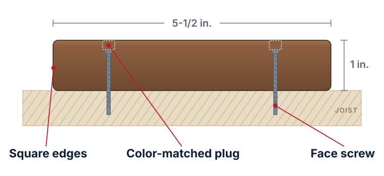

Profile 01
Solid Edge
Fastens withFace screws and color-matched plugs
- Square edges, no groove
- Most flexible for picture framing, borders, stairs, and angled patterns
- The classic, fully fastened look
Available in Legacy PVC and TrueGrain Deck™